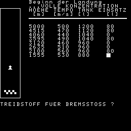

Sie haben die Handsteuerung beim Landeanflug auf dem Mond 5000m
ueber einem geeigneten Landeplatz uebernommen.
Die Sinkgeschwindigkeit betraegt 500m/s. Der Tank enthaelt nur noch 1200l Treibstoff.
HIER DIE VORSCHRIFT FUER DIE
LANDUNG!:
1.Nach jeder Sekunde werden die Hoehe, die Geschwindigkeit, sowie der verbleibende Tankinhalt gemeldet.
2.Auf Anfrage geben Sie die Menge Treibstoff ein, die Sie in der naechsten Sekunde verbrennen wollen.
3.Der max. Schub Ihrer Triebwerke betraegt 500m/s^2. Das entspricht 300l Treibstoff pro Sekunde.
4.Beim Beruehren der Mondoberflaeche schaltet das Triebwerk automatisch aus und Sie erhalten Angaben
ueber die Landeschwindigkeit und den verbliebenen Treibstoff.
5.Ist der Tank vor der Landung leer, wird der Rapport weitergefuehrt,bis Sie den Mond erreicht haben.
5 A$="Mikrorechnerbausatz -Z1013-"
10 A2$="SPIELPROGRAMM"
15 A4$="SIMULATION EINER"
20 A5$="MONDLANDUNG"
25 WINDOW:CLS:PRINT AT(0,0);" "
30 PRINT AT(2,2);A$
35 PRINT AT(4,0);"Á",STRING$(29,""),""
40 PRINT AT(5,0);"":PRINT AT(5,30);"À"
45 PRINT AT(6,0);"",STRING$(29,"ø"),"È"
50 PRINT AT(5,2);A2$
55 PRINT AT(8,0);STRING$(31,"ÿ")
60 FOR I=9 TO 13:PRINT AT(I,0);"ÿ":PRINT AT(I,30);"ÿ":NEXT I
65 PRINT AT(14,0);STRING$(31,"ÿ")
70 PRINT AT(10,29-LEN(A4$));A4$:PRINT AT(12,29-LEN(A5$));A5$
75 PRINT AT(19,2);"* VEB ROBOTRON-ELEKTRONIK *
80 PRINT AT(21,13);"RIESA"
85 PRINT AT(30,22);">ENTER<"
90 T$=INKEY$:IF T$=""THEN 90
220 WINDOW:CLS
230 PRINT:PRINT:PRINT
240 PRINT " SIMULATION EINER MONDLANDUNG"
250 PRINT TAB(1);STRING$(30,CHR$(160)):PRINT
260 PRINT
280 PRINT "Sie haben die Handsteuerung beim
285 PRINT "Landeanflug auf dem Mond 5000m":PRINT
290 PRINT "ueber einem geeigneten Lande-":PRINT
295 PRINT "platz uebernommen."
300 PRINT
310 PRINT "Die Sinkgeschwindigkeit betraegt
320 PRINT "500m/s.":PRINT
330 PRINT "Der Tank enthaelt nur noch 1200l"
335 PRINT "Treibstoff."
340 A$="N"
350 PRINT:PRINT "Wuenschen Sie Instruktionen?:":PRINT
351 PRINT:INPUT " J/(N)" ;A$
360 IF A$="J" GOTO 410
370 IF A$="N" GOTO 630
380 CLS:PRINT "Antworten Sie bitte nur mit J oder N !":PRINT:PRINT
390 GOTO 350
410 CLS:PRINT "HIER DIE VORSCHRIFT FUER DIE":PRINT "LANDUNG!:"
420 PRINT STRING$(31,CHR$(160)):PRINT
440 PRINT "1.Nach jeder Sekunde werden"
445 PRINT " die Hoehe, die Geschwindig-"
450 PRINT " keit, sowie der verbleibende":PRINT " Tankinhalt gemeldet."
470 PRINT "2.Auf Anfrage geben Sie die"
475 PRINT " Menge Treibstoff ein, die Sie"
480 PRINT " in der naechsten Sekunde ver-":PRINT " brennen wollen."
500 PRINT "3.Der max. Schub Ihrer Trieb-":PRINT " werke betraegt 500m/s^2."
510 PRINT " Das entspricht 300l Treib-":PRINT " stoff pro Sekunde."
520 PRINT "4.Beim Beruehren der Mondober-"
525 PRINT " flaeche schaltet das Trieb-"
530 PRINT " werk automatisch aus und Sie"
535 PRINT " erhalten Angaben ueber die":PRINT " Landeschwindigkeit und den"
540 PRINT " verbliebenen Treibstoff."
550 PRINT "5.Ist der Tank vor der Landung"
555 PRINT " leer, wird der Rapport "
560 PRINT " weitergefuehrt,bis Sie den":PRINT " Mond erreicht haben."
610 PRINT
620 INPUT "ENTER";A$
630 WINDOW
640 CLS:PRINT TAB(7);"Beginn der Landung"
645 PRINT TAB(7);"...VOLLE KONZENTRATION"
650 H=5000:V=500:F=1200
670 PRINT TAB(7)"HOEHE";TAB(13)"TEMPO";TAB(19)"TANK";
680 PRINT TAB(24)"EINSATZ"
690 PRINT TAB(8)"[m]";TAB(13)"[m/s]";TAB(19)"[l]";
700 PRINT TAB(26)"[l]"
710 PRINT TAB(7);STRING$(24,CHR$(160)),
720 WINDOW 2,23,0,4:CLS
730 PRINT AT(2,0);CHR$(193):FOR J=1 TO 3:PRINT AT(2,J);CHR$(158):NEXT
740 PRINT AT(2,4);CHR$(137):FOR J=3 TO 22:PRINT AT(J,4);CHR$(192):NEXT
750 PRINT AT(23,4);CHR$(200):FOR J=3 TO 1 STEP-1:PRINT AT(23,J);CHR$(248):NEXT
760 PRINT AT(23,0);CHR$(136):FOR J=22 TO 3 STEP-1:PRINT AT(J,0);CHR$(159):NEXT
770 FOR J=1 TO 3:PRINT AT(22,J);CHR$(184):NEXT:PRINT AT(3,2);CHR$(196)
780 WINDOW 6,21,6,30:J=3:PRINT AT (2,0);CHR$(193)
790!PRINT
800 PRINT ;TAB(0)INT(H);TAB(7)INT(V);
810 PRINT TAB(12)INT(F);TAB(18)" ";
820 PRINT AT(25,0);"TREIBSTOFF FUER BREMSSTOSS ?":BEEP
830 INPUT "";B
840 PRINT AT(25,0);STRING$(28," ")
850 IF B<0 THEN 980
860 IF B>300 THEN B=300
870 IF B>F THEN B=F
880 V1=V-B+50:F=F-B:H=H-.5*(V+V1)
890 IF H<=0 THEN 1010
900 PRINT AT(J,2);CHR$(32-(J=2)*126)
910 J=INT(22-19*H/5000):IF J>1 THEN:PRINT AT(J,2);CHR$(196):ELSE J=2
930 V=V1
940 IF F>0 THEN 790
950 IF B=0 THEN 970
960 PRINT "*** TANK LEER ***"
970 PRINT;TAB(1)INT(H);TAB(7)INT(V);TAB(13)"0":PAUSE 5
980 IF B<0 THEN PRINT:PRINT "NICHT SCHUMMELN !!":PRINT
990 B=0
1000 GOTO 880
1010 WINDOW:CLS:PRINT:PRINT:PRINT:PRINT
1020 PRINT SPC(7) "*** KONTAKT ***"
1030 H=H+.5*(V+V1)
1040 IF B=50 THEN 1070
1050 D=(-V+SQR(V*V+H*(100-2*B)))/(50-B)
1060 GOTO 1080
1070 D=H/V
1080 V1=V+(50-B)*D
1090 PRINT:PRINT:PRINT:PRINT "LANDUNG NACH :";T+D;"s"
1100 PRINT "LANDEGESCHWINDIGK. :";V1;"m/s"
1110 IF F=0 THEN 1130
1120 PRINT "TREIBSTOFF :";F;"l":GOTO 1140
1130 PRINT "TANK LEER !"
1140 IF V1<>0 GOTO 1210
1150 WINDOW 11,20,0,30:CLS
1160 PRINT:PRINT STRING$(31,"+");
1170 PRINT " GRATULATION !!!"
1175 PRINT " PERFEKTE LANDUNG !!!":PRINT
1180 PRINT " Ihre Lizenz wird erneuert !"
1190 PRINT STRING$(31,"+")
1200 WINDOW 21,26,0,30:PRINT:PRINT
1210 IF ABS(V1)<5 THEN 1280
1220 PRINT:PRINT "*** BRUCHLANDUNG, SCHADE ***":PRINT
1230 PRINT "Ihre Verwandten werden benach- richtigt !"
1240 IF V1>=80 GOTO 1330
1250 IF V1>=15 GOTO 1420
1260 IF V1>=9 GOTO 1480
1270 PRINT:PRINT "Sie haben Ihren Landeapparat beschaedigt!":PRINT:PRINT
1280 A$="J":PRINT:INPUT "Wuenschen Sie noch einen Versuch?: (J)/N";A$
1290 IF A$<>"N" GOTO 630
1300 WINDOW:CLS
1310 PRINT AT(0,0);" ":PRINT AT(14,7);" Auf Wiedersehen !"
1315 PAUSE 30:CLS:END
1330 PRINT
1350 PRINT "********************************"
1370 PRINT " SIE HABEN EIN NEUES MONDMEER"
1380 PRINT " GESCHAFFEN !"
1390 PRINT "********************************"
1410 GOTO 1280
1420 Q=V1*V1/100*14
1430 PRINT
1440 PRINT "Sie haben einen Krater von "
1450 PRINT Q;"m Tiefe geschaffen !"
1460 PRINT "================================"
1470 GOTO 1280
1480 PRINT
1490 PRINT "Sie haben Ihr Raumschiff in einen Berg";
1510 PRINT " Schrott verwandelt":PRINT
6977